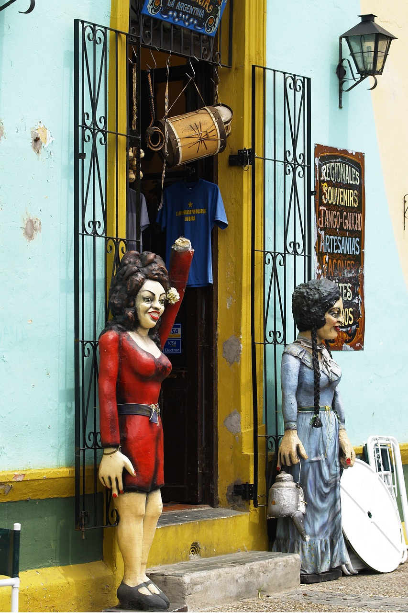
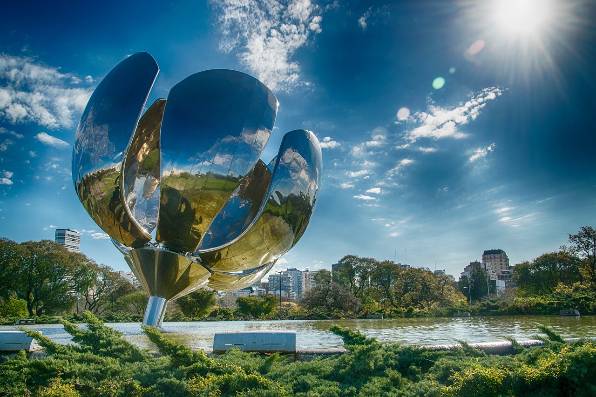
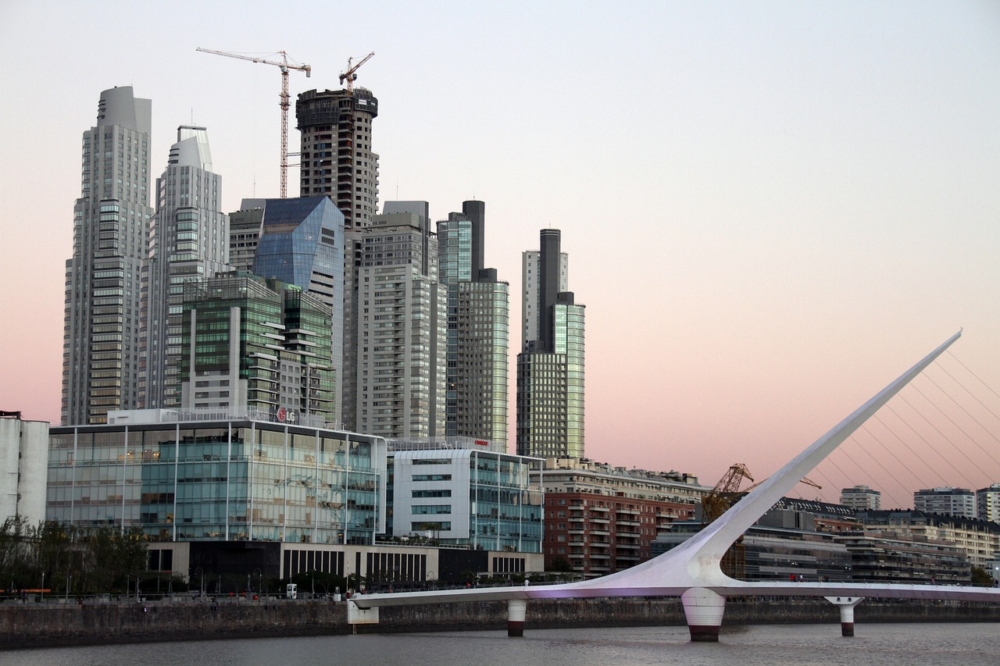

Acerca de CodeQueens
Gloria
Caminito en La Boca es un colorido y vibrante rincón en Buenos Aires que te transportará a la época dorada del tango. Sus casas de chapas y maderas pintadas de colores brillantes, crean un ambiente único y pintoresco. Déjate envolver por la música, la danza y la cultura de este icónico barrio porteño. ¡No puedes perderte este paseo lleno de magia y tradición!
Aylén
Floralis Genérica en Argentina es un sitio mágico donde la belleza de las flores se funde con la arquitectura moderna. Sumérgete en un mundo de colores vibrantes y formas sorprendentes que te transportarán a un oasis de paz y tranquilidad. No te pierdas la oportunidad de visitar este lugar único y dejarte cautivar por su encanto inigualable. ¡Descubre la magia de Floralís Genérica!
Melody

El imponente Obelisco de Buenos Aires es el corazón de la ciudad, un icono que representa la grandeza y la historia de Argentina. Sus 67 metros de altura y su diseño majestuoso lo convierten en un lugar único para disfrutar de vistas panorámicas de la ciudad. Ven a conocerlo y déjate cautivar por su belleza y su significado cultural.!
Fátima
Puerto Madero te invita a sumergirte en un mundo de lujo y sofisticación a orillas del Río de la Plata. Déjate seducir por sus elegantes restaurantes, modernos edificios y exquisitos paseos junto al agua. Descubre la combinación perfecta entre historia y modernidad en uno de los barrios más exclusivos de Buenos Aires. ¡No te lo puedes perder!